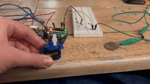
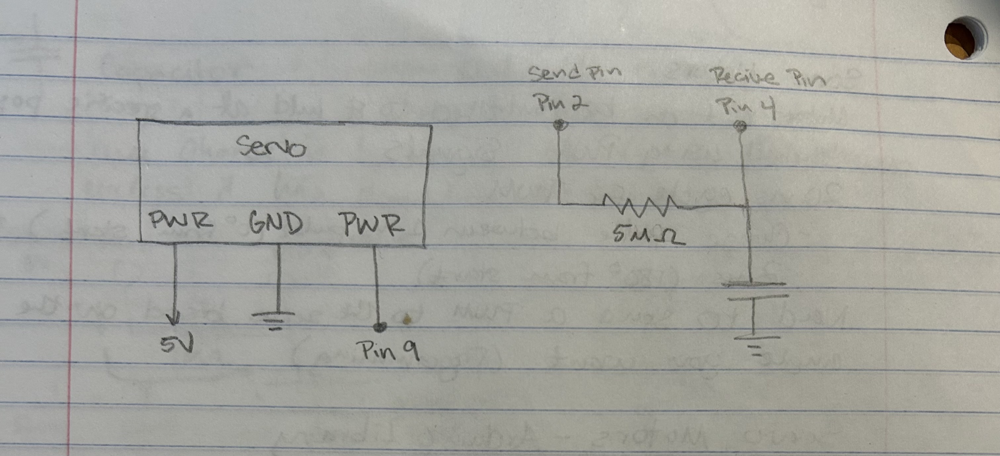
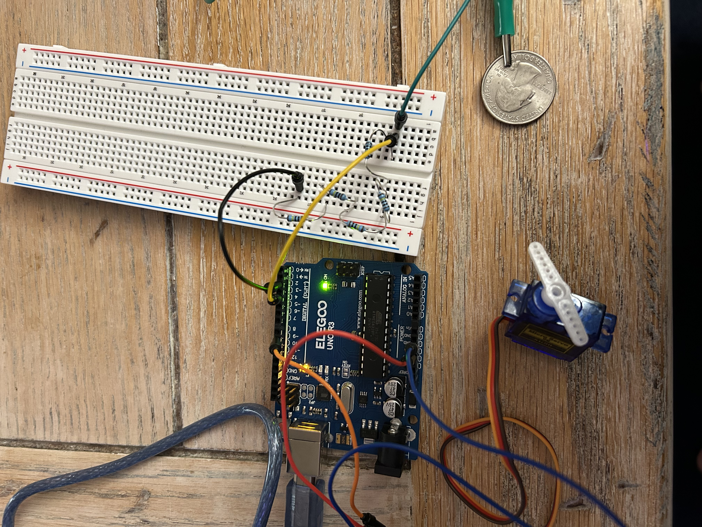
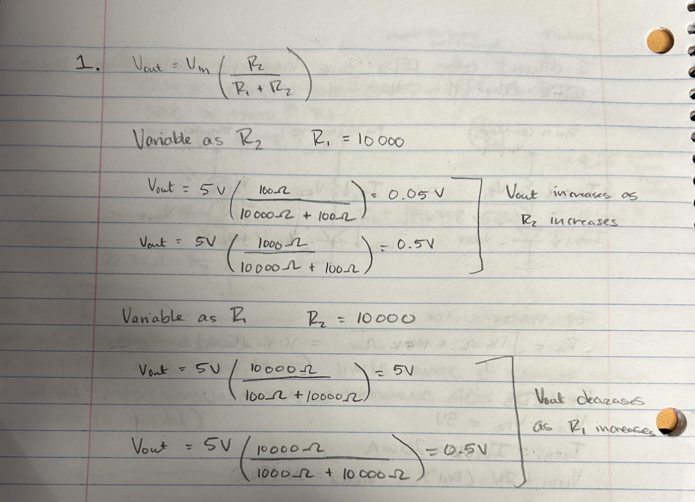

Here is all the documentation for assignment 4!

Pictured above is the schematic of the the A4 circuts. I used the schematic to plan out how to build the circut and determine what resiter I needed to use for the capacitor. The servo is connected to 5V, ground, and Pin 9. The capacitor has a recive pin at Pin 4, a send pin at Pin 2, and utilizes a 5M ohm resistor. The 5M ohm resistor was chosen because I wanted the capacitor to sense how close my hand was. This meant I needed to use a capacitor greater tan 1M ohm, which only responds to absolute touch. I played around with different resistor amounts during class when learning about capacitors, and determined that I would use 5M ohms for this assignmet since it responded to a hand hovering.

Pictured above is the circuts I built based off of the schematic I drew. I used 5 1M ohm resistors to have a total resistance of 5M ohms, as according to my schematic.
/*
A4 Libraries
Turns a servo motor based on how far away a hand is hovering from the capacitor.
The closer the hand hovers, the more the servo turns. During calibration, the hand
must not fully touch the capacitor so the sensor can detect hovering movements.
Code for calibrating the system is from "Calibration" Ardiuno built in examples,
which is Public Domain. The servo and capacitor code was made based on 11/3/26 in
class examples. I used Claude to debug my code, and the smoothing code was generated
using Claude.
*/
// Servo library
#include
// Capacitive Sensor library
#include
// create Servo object to control a servo
Servo myservo;
// variable to store the servo position
int pos = 0;
// Set up the Capacitive sensor with a send and recieve pin
// first param is send, second is receive
CapacitiveSensor cs_s2_r4 = CapacitiveSensor(2,4);
// minimum sensor value
long minVal = 100000;
// maximum sensor value
long maxVal = 0;
// smoothing variable to hold decimals
float smoothed = 0;
// the setup routine
void setup() {
// attaches the servo on pin 9 to the Servo object
myservo.attach(9);
// record when callibrating begins
unsigned long start = millis();
// calibrate during the first five seconds
while (millis() - start < 5000) {
// read the capacitor:
long csValue = cs_s2_r4.capacitiveSensor(30);
if (csValue < 0) continue;
// record the maximum sensor value
if (csValue > maxVal) {
// sets the maxVal if there is a new max
maxVal = csValue;
}
// record the minimum sensor value
if (csValue < minVal) {
// sets the minVal is there is a new min
minVal = csValue;
}
}
// set smoothed value to where the untouched sensor reads
smoothed = minVal;
}
// the loop routine runs over and over again forever:
void loop() {
// Call the function to get the capacitive sensor value with 30 samples
long csReading = cs_s2_r4.capacitiveSensor(30);
// in case the sensor value is outside the range seen during calibration
csReading = constrain (csReading, minVal, maxVal);
//smooth the data so the servo doesn't jitter
smoothed = 0.9 * smoothed + 0.1 * csReading;
// apply the calibration to the sensor reading
pos = map ((long)smoothed, minVal, maxVal, 0, 180);
// tell servo to go to position in variable 'pos'
myservo.write(pos);
// delay servo update and new sensor reading
delay(30);
}
Pictured above is the working circut I built running the code I wrote.
1: Say you are using a servo motor you attach to pin 9. In your loop() you have the following code:
void loop() {
for (pos = 0; pos <= 180; pos += 1) {
myservo.write(pos);
delay(100);
}
}
Draw a graph with the x-axis as time and the y-axis as voltage at pin 9 with respect to ground.

Your input device is slightly broken, leading it to give us an erroneous reading 1% of the time. How can we address this? Answer in (pseudo)code.
//pseudo code here
Your input device is slightly noisy, leading the measurement to randomly deviate from the true measurement up or down by 10%. How can we address this? Answer in (pseudo)code.
//pseudo code here
Did you use AI tools in completing this assignment? If yes, please provide details on how/when, as well as a brief reflection. If you used an LLM, please 'share' your conversation and include it as part of your submission, or cite the prompt(s) you used and the output. If no, you can either leave this question blank, or provide other information if you'd like.
I used AI in my assignment to help me troubleshoot my code. I found that AI was a helpful tool for debugging, however often the code provided was not what I needed. I still needed to work through some issues with trial and error. I also prompted AI with questions if I didn't understand the code it provided. AI was a helpful resource for starting off points when I was stuck.
Promts and Outputs:
My servo was moving the same amount everytime I touched the capacitor so I asked claude "why does the servo move the same amount every time" and provided it my code.
Answer:
Most likely the calibration range is too narrow or too wide, or the readings are saturating, so the angle jumps to the same endpoint no matter how you touch. Here are the usual causes, roughly in order of likelihood.
1. You didn’t touch the pad during calibration. If minVal and maxVal ended up almost equal, map() squeezes the whole range into a tiny window. Any reading outside it gets clamped to the same endpoint, so the servo always goes to 0 or 180. Check the Serial Monitor for the “Range:” line. If the two numbers are close together, that’s the problem. Touch firmly during the 5 seconds, or add the if (maxVal - minVal < 20) guard.
2. The readings are huge or pinned. With a big resistor and 30 samples, readings can spike to the library’s maximum (and a failed read returns -2). If your touch and no-touch values are both at the ceiling, every reading maps to the same angle. Try a smaller resistor (100 kΩ to 1 MΩ), fewer samples (capacitiveSensor(10)), or a smaller foil pad.
3. A single spike set the range. At startup, one noisy reading can set maxVal absurdly high. Then normal touches only reach a small fraction of the range and the servo barely moves, always about the same amount. Fix by ignoring negative values and averaging a few reads: (It also provded me code that I did not use.)
Problems in your code
1. Autocalibrate is turned off, and the calibration never gets a clean baseline. set_CS_AutocaL_Millis(0xFFFFFFFF) disables the library’s automatic baseline tracking. That’s fine on its own, but it means the library’s baseline is set at the first reading and never adjusts. If your hand is near the pad at power-up, the baseline is wrong for the entire session. Either remove that line (let the library self-calibrate) or make sure nothing touches the pad when the Arduino powers on.
2. Failed reads (-2) and negative values pollute minVal. capacitiveSensor() returns -2 on a timeout. If even one read fails during the 5 seconds, minVal becomes -2, and any single spike sets maxVal very high. Skip bad reads: if (csValue < 0) continue;
3. The calibration window is millis() < 5000, not “5 seconds from start”. You declared start but never used it. This works only because setup() runs right at boot, but millis() - start < 5000 is the safe form. It’s not your bug, just worth cleaning up.
4. You get no feedback while calibrating. If you don’t touch the pad during those 5 seconds, maxVal stays close to minVal and the servo jumps to the same endpoints regardless of touch. Add an LED so you know when to touch (Code was provided that I did not use)
5. Shadowed variable (minor). int pos inside loop() hides the global pos. It works, but remove the global or the local to avoid confusion.
I fixed the problems in my code, and when I calibrated the system I did not touch the coin, since I wanted the capacitor to detect when my hand was hovering. I found that my servo was acting jittery, so I told Claude "The servo is jittery"
Answer:
Jitter almost always comes from noisy sensor readings being passed straight to the servo, or from the servo’s power sagging. Capacitive readings fluctuate by a few units even when nothing changes, and map() turns every tiny fluctuation into a 1-degree command. Fix it in this order.
1. Smooth the readings in code: Use an exponential moving average plus a deadband, so the servo only moves when the smoothed value changes meaningfully:
float smoothed = 0;
int lastPos = -1;
void loop() {
long csReading = cs_s2_r4.capacitiveSensor(30);
if (csReading < 0) return;
csReading = constrain(csReading, minVal, maxVal);
smoothed = 0.9 * smoothed + 0.1 * csReading; // lower the 0.1 for more smoothing
int pos = map((long)smoothed, minVal, maxVal, 0, 180);
if (abs(pos - lastPos) >= 2) { // deadband: ignore changes under 2 degrees
myservo.write(pos);
lastPos = pos;
}
delay(30);
}
Add smoothed = minVal; at the end of setup() so it doesn’t start at 0 and sweep up from nothing. Tuning: if it’s still jittery, use 0.95 / 0.05 and a deadband of 3. If it feels sluggish, go the other way.
I also asked clarifying questions to Claude about what smoothed=minVal does, and what float smoothed = 0 does